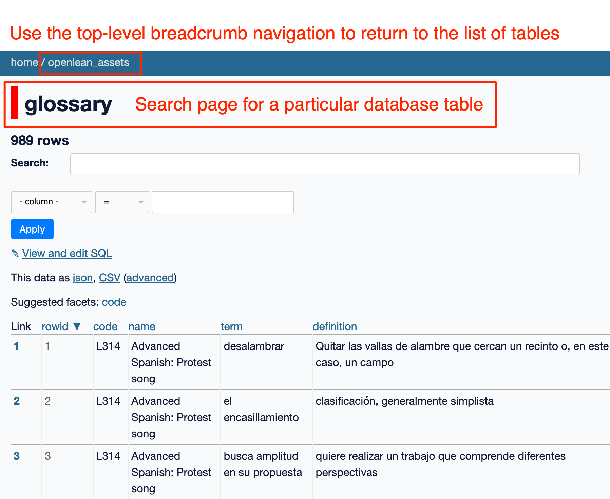
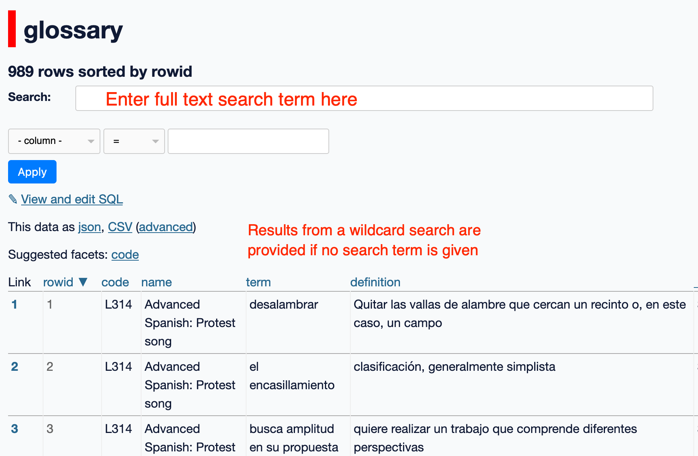

Querying the Database With datasette
Contents
Querying the Database With datasette#
The primary intention of this set of notes was to explore the disaggregation of OpenLearn OU-XML elements into component parts that can then be searched at an appropriate level of granularity. The intention was not to create an end user tool, such as a simple search interface with a single, simple search box and a set of faceted views over the results.
However, a demonstration of how the search tables can be searched is provided in the form of an in-browser datasette user interface that supports simple full-text search over full-text search indexed tables, as well as finer grained SQL queries.
No apology is given for providing such a “technical” search interface. User-interface design is a completely separate issue. The database as it stands is usable today by anyone who cares to learn how to use it. It can be used to help identify the sorts of search that a user is likely to want to run, the level of granularity of results that are useful, and the form in which the discovered content should be returned. In contrast, a concept design for a user interface that may never get built, and with no database or search engine behind it, has zero utility for search and discovery, no matter how pretty it is.
The datasette User Interface#
Datasette provides a relatively simple, browser based graphical user interface for querying one or more file based SQLite databases. Datasette can run purely in the browser, with no requirements for external hosting or serving of the database. The datasette user interface supports the querying of a SQLite database via SQL commands; thise commands may be graphically constructed from ueser interface elements. In addition, if datasette identifies the presence of a full-text search table associated with a selected database table, it will present a full text search query box for quering over that table.
The results are provided in the form of a table of results. Queries can be shared by sharing URLs. It is possible to select which columns are displayed by tweaking URL parameters.
WARNING: 100MB+ download: the database application runs purely in your browser and may take a minute or two to load.
Use the breadcrumb navigation trail links to return to the datasette homepage. This avoids having to reload the database into your browser.

Querying Glossary Items#
A search over glossary items can be tried HERE.
This search helps authors disover glossary terms and definitions from across all the OpenLearn materials.

In addition, searches can be performed on the glossary database table directly. For example, searching within the term column will search for search terms (exact match) that appear in the glossary term text, and searching the definitions column will turn up items where the query matches the glossary item definition.
Facetted filtering of results can be enabled by clicking to select a suggested facet column. Unique values found with the facetting column can then be clicked to display just results with that facet value.
Querying Learning Outcomes, Viewing Facets and Downloading Data#
Many, but not all, OpenLearn units define learning outcomes at the unit level. Once again, these can be discovered from the full-text search box associated with the appropraite table, in this case, the lo table:
The class facet is also selected showing the range of unique values available within that facet (i.e. within the code column). Selecting a particular facet value with filter the search to results with that facet value.
In this case, we note that the code values do not appear to have been normalised to upper case alphabetic values. In addition, there appear to be some results where a code has not been provided. Rapid prototyping displays such as this can be play a useful role in interating over data models and data cleaning steps where the actual content of the database or the state of the data contained within it is not known at the start of the database modelling and ingest process.
We also note that the code refers to the parent module code, and we are perhaps lacking additional metadata (at least for now) regarding the “sort order” of OpenLearn units extracted from the same parent module.
The data returned from a query can bew previewed and downloaded in a varoety of data formats:
Searching Across Tables#
To support discovery of units based on particular aspects of a unit we can search across tables. For example, what learning outcomes are associated with units where the learning outcome includes the word understand and a glossary defition contains the word personal? [view it here]
Searching for Figures#
At the moment, the images themselves are not stored within the database, but their captions and descriptions are indexed. Ideally, previews of figures should be made available with the search results, but this makes for a much larger database if those items are stored inside the database itself. It may be possible to store a link to an OpenLearn web URL from which a resource may be retrieved over the network, but that has not been explored at this stage: for now, we are limited to just retrieving a description and a potentially unresolvable reference.
Searching for Media Objects (Audio Files, VIdeo Files, etc.)#
At the moment, the media objects themselves are not stored within the database, but their captions and trasncripts are indexed. Ideally, previews of the media assets should be made available with the search results, but this makes for a much larger database if those items are stored inside the database itself. It may be possible to store a link to an OpenLearn web URL from which a resource may be retrieved over the network, but that has not been explored at this stage: for now, we are limited to just retrieving a description and a potentially unresolvable reference.
Currently, we can run full text searches over captions, descriptions, etc, as well as in those fields directly:
Note that the xpath column provides some context for where the media object is being used. For example, the xpath might revel to us that the asset is being used in the context of an activity. As with the Figures table, this means that we can search for items within a particular context (e.g. we might search for an xpath that contains Activity or ITQ as part of the context.
We also note that there is a wide range of media types available, and these can also be used as search limits.
This might help maitenance among other things. For example, it would be trivial to search for deprecated flash media object types.
Searching for Activities#
Various actvity types can be extracted from OU-XML materials, including activities, exercises, ITQs and SAQs.
The activities table breaks out the various components of an activity type so that we can search within just that part of an activity. For example, we can search just the question part for references to compare and contrast.
A full-text search is available that will search over all the text components.
The faceted search utility provided by datasette makes it easy to run a search over all activity types and then filter down to a particular activity type where multiple activity types are returned as part of a query.
Searching for Equations#
Searching for equations directly is complicated by the fact that the equation itself may be represented using MathML or even provided in the form of an image. To support discovery of equations, we create a simple index based on the context of the equation, indexing the text in the block element around the equation and using that as the basis of our search text.
For example, we can search for context containing specified full-test search terms:
We can also join searches on the equations_context table with equations in the context that are listed in the equations table: